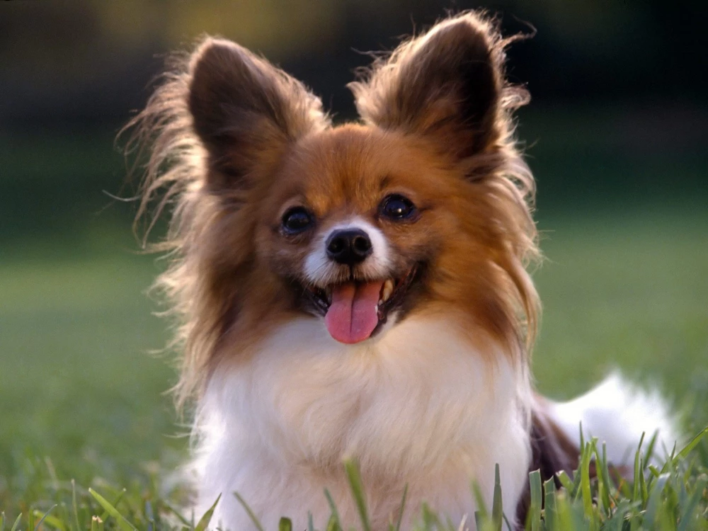
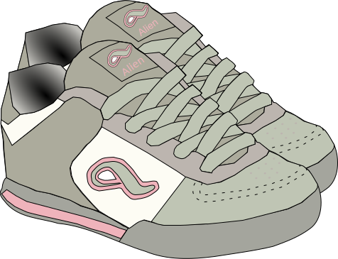

Мой Справочник | WEB-DESIGN | Изображения
Рекомендации:
- НУЖНО СЛЕДИТЬ ЗА АВТОРСКИМИ ПРАВАМИ ФОТОГРАФИЙ
- Старайтесь выбирать фотографии хорошего качества (если фото будет пикселизированным, то это испортит общее впечатление и покажет ваш профессионализм).
- Выбирайте однозначные по смыслу, но притертые пользователям фотографии (например, если вы создаете сайт для авиакомпании, то не ищите первым делом фотографию самолета - это банально, попробуйте подобрать для поиска другие ассоциации).
- Фотография должна быть не просто красивой, она должна нести определенный смысл, который будет подкреплен текстовым блоком
Изображение должно правильно передавать ЭМОЦИИ в соответствии с тематикой сайта
Где искать изображения (ФОТО-стоки):
Бесплатные:
- unsplash.com
- pixabay.com
- freepik.com - SVG
- pexels.com
- freeimages.com
- splitshire.com
- flickr.com
- gratisography.com
- lifeofpix.com
- thestocks.im
- designspiration.net
- Google - Картинки
- Яндекс - Картинки
Платные:
Вес картинок
- base64 - Конвертёр
- tinypng.com - Уменьшить вес картинок
- Логотипы: 0-20 KB;
- Фотографии: 70-300 KB;
- Используйте подходящий графический формат. Для больших фотографий — это JPEG
- PNG - если нужна прозрачность
- Не растрировать шрифты и png(должно быть в смарт-объекте)
Новые форматы, можно уже использовать
- Jpeg 2000
- Jpeg XR
- Web P
Хороший тон: если картинка достаточно большая или во всю ширину блока, то всё текстовое опсинание должно распологаться ПОД НЕЙ, а не над ней!
Обтравка изображений
- Инстремент Перо (P)
- Выделяем контур до замыкания (можно изгибать линии с помощью клавиши Ctrl, Alt)
- Окно -> Контуры -> Круглый пунктирный значок
- Проще ПКМ -> Выделить область -> Поставить радиус размытия 4-5px
- Копируем в новый слой Ctrl + J
- Обработать края ластиком по необходимости
- Исходный слой можно удалить
- Можно также использовать Ластик (Е) или Лассо (L) вместо пера
Коллажирование изображений
Приём, при котором собирается одно изображение из нескольких.
- Изображения должны быть хорошо вырезаны
- Должны быть едиными по стилю
- Соблюдение размеров и пропорций
- Сохранение объёма (тени и блики). Соблюдено падение света.
- Должно быть реалистично для восприятия
Правильное расположение изображений
-
Картинка сверху, описание под ней

-
Взгляд должен быть на текст

-
"Правая подмышка" - хорошо

-
"Левая подмышка" - плохо (взляд прыгает)

-
Правильный порядок

-
Плитка (так можно)
В таком случае текст не должен уходить сильно вниз, должен ограничиваться картинкой (нужно ограничивать вывод текста, если он длинный)

-
Не должно быть строгой сетки для изображений - должны быть АКЦЕНТЫ (как вариант изображение товара, который чаще покупают, должно быть больше)
Фоны
Для фона лучше всего использовать светлый цвет (белый, светло-серый и светло-бежевый), это не позволит глазам пользователя быстро устать.
- Фоны, текстуры
- Фоны, текстуры 2
- Градиентные фоны
- Градиенты - Ultimate CSS Gradient Generator
- UI Gradients
Форматы изображений
| Формат | Описания | Достоинства | Недостатки |
|---|---|---|---|
| JPEG | Фотографии 1991 г. Самый распространнённый формат, подходящий для ФОТОГРАФИЙ, различных изображений, которым нужна полноцветность, но не нужна прозрачность. |
|
|
| Можно иммитировать прозрачность делая цвет фона у JPEG такой же как в контейнере | |||
| PNG | Поддерживает прозрачность PNG-24 (или просто PNG). Самый лучший и современный формат изображений. Используется для всех полноцветных изображений, которым нужна прозрачность или полупрозрачность, отсутствие изображений, для спрайтов |
|
|
| SVG |
Векторное изображение (Рисунки создаются математическими уравнениями, а не точками как в растровой графике) |
|
|
| WEBP |
Самый современный формат, небольшой вес 2010 год |
|
|
| GIF | Анимации 1986 г. Формат для анимаций и мелкой графики, не требующих высокого качества |
|
|
| PNG-8 | Устарел1996 г. Напоминает GIF. Используется для мелкой неполноцветной графики как альтернатива GIF |
|
|
-
GIF-анимация (6,5 MB)

-
GIF (51 KB)

-
JPEG (68 KB)

-
PNG (207 KB)

-
WEBP (89 KB)
 -
SVG (96 KB)
